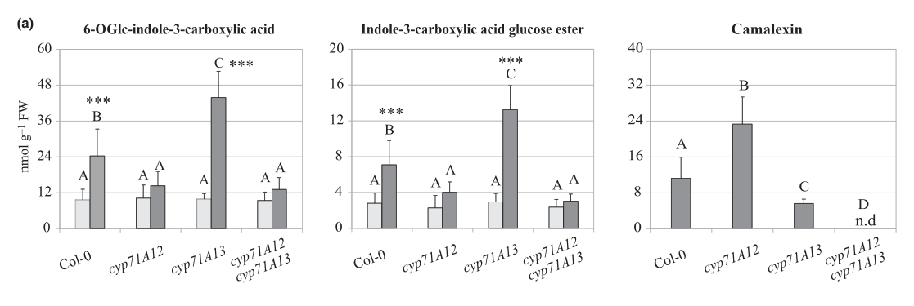

CYP71A12 is an endoplasmic reticulum-anchored cytochrome P450 monooxygenase of Arabidopsis thaliana, encoded in tandem with its close paralog CYP71A13 and strongly induced by pathogens, microbial elicitors and leaf-colonizing commensal bacteria. It oxidises the tryptophan-derived intermediate indole-3-acetaldoxime (IAOx) by alpha-hydroxylation to indole-3-cyanohydrin (alpha-hydroxy-indole-3-acetonitrile), a reactive intermediate that collapses to indole-3-carbaldehyde and cyanide or is channelled onward. CYP71A12 is the main enzyme for the pathogen-inducible indole-3-carboxylic acid (ICOOH/ICA) derivatives and the first enzyme of the cyanogenic indole-3-carbonyl nitrile (ICN) and 4-hydroxy-ICN pathway, acting upstream of the flavin oxidase FOX1 and CYP82C2. It also makes a minor contribution, alongside the predominant CYP71A13, to camalexin biosynthesis, and associates with CYP71B15 (PAD3) and the other camalexin P450s in an ER-associated metabolon. Loss of CYP71A12 reduces these indolic defence metabolites and impairs resistance to Pseudomonas syringae and to selected post-invasive filamentous pathogens.
Definition: Catalysis of the NADPH-P450 reductase- and O2-dependent alpha-hydroxylation of (E)-indol-3-ylacetaldoxime to 2-hydroxy-2-(1H-indol-3-yl)acetonitrile (indole-3-cyanohydrin).
Justification: 18O2 labelling shows that CYP71A12 and CYP71A13 alpha-hydroxylate IAOx, so the existing GO:0047720 indoleacetaldoxime dehydratase activity (IAOx = IAN + H2O) does not describe the chemistry. CYP71A12 releases mostly the cyanohydrin breakdown products indole-3-carbaldehyde and cyanide, and UniProt describes its function as conversion of IAOx to indole cyanohydrin.
Supporting Evidence:
Definition: The chemical reactions and pathways resulting in the formation of indole-3-carbonyl nitrile (ICN) and its 4-hydroxylated derivative 4-hydroxyindole-3-carbonyl nitrile, cyanogenic indolic defence metabolites made from indole-3-acetaldoxime via indole-3-cyanohydrin.
Justification: The CYP71A12-FOX1-CYP82C2 pathway to ICN and 4-OH-ICN is fully reconstituted, but GO has no process term for it.
Supporting Evidence:
| GO Term | Evidence | Action | Reason |
|---|---|---|---|
|
GO:0004497
monooxygenase activity
|
IEA
GO_REF:0000002 |
ACCEPT |
Summary: InterPro2GO: monooxygenase activity from the cytochrome P450 domain signatures.
Reason: CYP71A12 is a canonical heme-thiolate P450. 18O2 labelling shows that it inserts an oxygen atom from O2 into IAOx to give the alpha-hydroxy-IAN (indole-3-cyanohydrin) intermediate, so monooxygenase activity is a correct and directly supported description of its catalysis. No GO term exists for the specific IAOx alpha-hydroxylation (see proposed_new_terms).
Supporting Evidence:
PMID:24151049
both CYP71A13 and CYP71A12 catalyze incorporation of the isotopic label into IAL
PMID:24151049
Although CYP71A12 turned over IAOx at a rate comparable to that of CYP71A13
|
|
GO:0005506
iron ion binding
|
IEA
GO_REF:0000002 |
MARK AS OVER ANNOTATED |
Summary: InterPro2GO: iron ion binding from P450 domain signatures.
Reason: The iron is part of the heme cofactor, which is captured by heme binding. A separate iron ion binding annotation adds no information and implies free iron binding. Treated the same way as in the CYP71B15 review.
Supporting Evidence:
PMID:24151049
both CYP71A13 and CYP71A12 catalyze incorporation of the isotopic label into IAL
|
|
GO:0005515
protein binding
|
IPI
PMID:31511315 The Formation of a Camalexin Biosynthetic Metabolon. |
REMOVE |
Summary: IPI with CYP71B15/PAD3 (Q9LW27) from co-IP and FRET-FLIM in the camalexin metabolon study.
Reason: The interaction is real and supports a camalexin metabolon (UniProt lists 5 IntAct experiments), but "protein binding" says nothing about function. The biology is captured by the camalexin biosynthetic process and catalytic complex rows. Removed, consistent with the reciprocal CYP71B15 rows in the CYP71B15 review.
Supporting Evidence:
PMID:31511315
we used two independent untargeted coimmunoprecipitation (co-IP) approaches with the biosynthetic enzymes CYP71B15 and CYP71A13 as baits and determined that the camalexin biosynthetic P450 enzymes copurified with these enzymes.
|
|
GO:0005788
endoplasmic reticulum lumen
|
IDA
PMID:33831160 The Formation of a Camalexin Biosynthetic Metabolon. |
UNDECIDED |
Summary: IDA for ER lumen. The cited PMID:33831160 is a deleted PubMed duplicate of PMID:31511315 (Mucha et al. 2019, camalexin metabolon); only its abstract is cached, so the assay behind this row could not be read.
Reason: CYP71A12 is a type-I microsomal P450 with a single N-terminal membrane anchor. In such proteins the heme domain faces the cytosol, where it meets NADPH-P450 reductase, and the camalexin P450s are described as ER-associated with the catalytic domain on the cytosolic side. The deep research reports CYP71A12-GFP colocalising with the luminal ER marker RFP-HDEL; colocalisation with a luminal marker at confocal resolution shows ER, not the lumen. Because the full text could not be read, this row stays UNDECIDED rather than REMOVE (same treatment as CYP71B15). Endoplasmic reticulum membrane (GO:0005789) is the expected location.
Supporting Evidence:
PMID:21712415
three of the four known enzymes in the pathway (including the first and the last one) are cytochromes P450, which are associated with the endoplasmic reticulum, having their catalytic domain facing the cytosol
file:ARATH/CYP71A12/CYP71A12-deep-research-falcon.md
C-terminally tagged CYP71A12 colocalized with the ER marker RFP-HDEL after transient expression in
|
|
GO:0006952
defense response
|
NAS
PMID:31511315 The Formation of a Camalexin Biosynthetic Metabolon. |
KEEP AS NON CORE |
Summary: NAS (ComplexPortal): defense response, from the camalexin metabolon paper.
Reason: CYP71A12 makes defence metabolites (camalexin, ICOOH, ICN/4-OH-ICN), so a contribution to defence is correct, but this is a broad parent of the downstream consequence of its biosynthetic activity. The core function is captured by the biosynthetic process terms.
Supporting Evidence:
PMID:31511315
Camalexin biosynthesis involves glutathionylation of the intermediary indole-3-cyanohydrin, which is synthesized by CYP71A12 and especially CYP71A13.
PMID:31411742
Our results indicate that CYP71A12, but not CYP71A13, is the major enzyme responsible for the accumulation of ICA in Arabidopsis in response to pathogen ingression.
|
|
GO:0009617
response to bacterium
|
IEP
PMID:17573535 Arabidopsis cytochrome P450 monooxygenase 71A13 catalyzes th... |
KEEP AS NON CORE |
Summary: IEP: CYP71A12 expression induced by bacterial infection, cited to the CYP71A13 characterisation paper (abstract only cached).
Reason: Only the abstract of PMID:17573535 is cached and it does not mention CYP71A12, but the curator read the full text, and pathogen-induced CYP71A12 expression is well documented elsewhere. Expression responses are not core function.
Supporting Evidence:
PMID:39627368
CYP71A12, which encodes a cytochrome P450 monooxygenase that contributes to the synthesis of defence-associated tryptophan derivatives and is upregulated in response to pathogen encounter
PMID:39627368
Arthrobacter Leaf137 caused substantial induction of CYP71A12 and AZIL as early as one day after inoculation
|
|
GO:0009617
response to bacterium
|
IMP
PMID:23073694 Metabolic and transcriptomic changes induced in Arabidopsis ... |
KEEP AS NON CORE |
Summary: IMP: cyp71A12 mutant fails to show Pseudomonas fluorescens SS101-induced resistance to Pst.
Reason: The mutant phenotype shows CYP71A12 is needed for a full response to bacteria, which fits its role in making indolic defence metabolites. This is necessity evidence downstream of its enzymatic role, so it is kept as non-core.
Supporting Evidence:
PMID:23073694
showed that camalexin and glucosinolates are indeed required for the induction of Pst resistance by Pf .SS101
|
|
GO:0009682
induced systemic resistance
|
IBA
GO_REF:0000033 |
MARK AS OVER ANNOTATED |
Summary: IBA from PANTHER node PTN005384924, whose descendant evidence is the CYP71A12 and CYP71A13 IMP annotations to induced systemic resistance from PMID:23073694.
Reason: The node covers the CYP71A12/CYP71A13 pair, and the IBD rests on their IMP rows from the same Pf.SS101 study (CYP71A12 appearing among its own sources is expected, not circular). The problem lies in the underlying assertion, not the propagation. GO:0009682 is defined as SA-independent systemic resistance to non-pathogenic bacteria, whereas the Pf.SS101 response is SA-dependent. CYP71A12 also does none of the systemic signalling: it makes the local antimicrobial indolics that the induced state relies on. The defensible statement is its biosynthetic role.
Propagation Review
Root cause:
TERM SCOPING PROBLEM
Failure modes:
ROLE CONFLATION
Sources checked:
PANTHER:PTN005384924
· PTN005384924
SOURCE BAD
Node spans the CYP71A12/CYP71A13 pair; its descendant evidence is their own IMP rows from the Pf.SS101 study, which over-state a biosynthetic enzyme role as participation in induced systemic resistance (and that response is SA-dependent, unlike the GO definition). Propagation within the pair is otherwise phylogenetically sound.
Supporting Evidence:
PMID:23073694
the Pf .SS101 -induced resistance response to Pst is dependent on salicylic acid signaling and not on jasmonic acid and ethylene signaling
PMID:23073694
showed that camalexin and glucosinolates are indeed required for the induction of Pst resistance by Pf .SS101
|
|
GO:0009682
induced systemic resistance
|
IMP
PMID:23073694 Metabolic and transcriptomic changes induced in Arabidopsis ... |
MARK AS OVER ANNOTATED |
Summary: IMP: cyp71A12 mutant loses Pf.SS101-induced resistance to Pst.
Reason: The full text was read. The rhizobacterium-induced resistance tested is SA-dependent, which conflicts with the GO definition of induced systemic resistance (SA-independent). The phenotype shows that camalexin/indolic metabolite synthesis is necessary for the induced protection, not that CYP71A12 takes part in ISR signalling. Not removed, because the experiment is sound; the term over-states the role.
Supporting Evidence:
PMID:23073694
showed that camalexin and glucosinolates are indeed required for the induction of Pst resistance by Pf .SS101
PMID:23073694
the Pf .SS101 -induced resistance response to Pst is dependent on salicylic acid signaling and not on jasmonic acid and ethylene signaling
|
|
GO:0010120
camalexin biosynthetic process
|
NAS
PMID:31511315 The Formation of a Camalexin Biosynthetic Metabolon. |
ACCEPT |
Summary: NAS (ComplexPortal): camalexin biosynthetic process.
Reason: CYP71A12 performs the same IAOx oxidation as CYP71A13 and can replace it in in vitro reconstitution of camalexin synthesis, albeit with lower yield. cyp71a12 cyp71a13 double knockouts make only traces of camalexin, compared with a partial reduction in cyp71a13. CYP71A12 therefore catalyses a camalexin pathway step, as a minor contributor next to CYP71A13.
Supporting Evidence:
PMID:31511315
Camalexin biosynthesis involves glutathionylation of the intermediary indole-3-cyanohydrin, which is synthesized by CYP71A12 and especially CYP71A13.
PMID:24151049
Substituting CYP71A12 in place of CYP71A13 also resulted in camalexin production, albeit at lower levels
PMID:25953104
double mutants synthesized only traces of camalexin, demonstrating that CYP71A12 contributes to camalexin biosynthesis in leaf tissue.
|
|
GO:0016020
membrane
|
IEA
GO_REF:0000044 |
MODIFY |
Summary: UniProt SubCell mapping: membrane (single-pass).
Reason: Correct but uninformative. CYP71A12 is an ER-anchored microsomal P450 (ER colocalisation of tagged CYP71A12; pathway P450s ER-associated with a cytosolic catalytic domain). Endoplasmic reticulum membrane is the appropriate term, as in the CYP71B15 review.
Proposed replacements:
endoplasmic reticulum membrane
Supporting Evidence:
PMID:21712415
three of the four known enzymes in the pathway (including the first and the last one) are cytochromes P450, which are associated with the endoplasmic reticulum, having their catalytic domain facing the cytosol
file:ARATH/CYP71A12/CYP71A12-deep-research-falcon.md
C-terminally tagged CYP71A12 colocalized with the ER marker RFP-HDEL after transient expression in
|
|
GO:0016020
membrane
|
NAS
PMID:31511315 The Formation of a Camalexin Biosynthetic Metabolon. |
MODIFY |
Summary: NAS (ComplexPortal): membrane, for the camalexin metabolon.
Reason: As for the IEA row: the metabolon is assembled on the ER membrane, so endoplasmic reticulum membrane is the specific location.
Proposed replacements:
endoplasmic reticulum membrane
Supporting Evidence:
PMID:21712415
three of the four known enzymes in the pathway (including the first and the last one) are cytochromes P450, which are associated with the endoplasmic reticulum, having their catalytic domain facing the cytosol
file:ARATH/CYP71A12/CYP71A12-deep-research-falcon.md
C-terminally tagged CYP71A12 colocalized with the ER marker RFP-HDEL after transient expression in
|
|
GO:0016491
oxidoreductase activity
|
IBA
GO_REF:0000033 |
ACCEPT |
Summary: IBA: oxidoreductase activity from a PANTHER CYP71 node.
Reason: Correct at the family level. CYP71A12 performs an O2- and reductase-dependent oxidation of IAOx; more specific descriptions are carried by GO:0016705 and GO:0004497.
Supporting Evidence:
PMID:24151049
both CYP71A13 and CYP71A12 catalyze incorporation of the isotopic label into IAL
|
|
GO:0016705
oxidoreductase activity, acting on paired donors, with incorporation or reduction of molecular oxygen
|
IEA
GO_REF:0000002 |
ACCEPT |
Summary: InterPro2GO: oxidoreductase acting on paired donors with incorporation of O2.
Reason: Accurate for a microsomal P450 that uses NADPH-P450 reductase electrons and O2; the 18O incorporation into the IAOx-derived product confirms incorporation of molecular oxygen.
Supporting Evidence:
PMID:24151049
both CYP71A13 and CYP71A12 catalyze incorporation of the isotopic label into IAL
|
|
GO:0020037
heme binding
|
IEA
GO_REF:0000002 |
ACCEPT |
Summary: InterPro2GO: heme binding.
Reason: Heme-thiolate cofactor of all P450s; required for the demonstrated monooxygenation.
Supporting Evidence:
PMID:24151049
both CYP71A13 and CYP71A12 catalyze incorporation of the isotopic label into IAL
|
|
GO:0042742
defense response to bacterium
|
IEP
PMID:39627368 Plant microbiota feedbacks through dose-responsive expressio... |
KEEP AS NON CORE |
Summary: IEP: CYP71A12 induced by leaf-colonising bacteria in a dose-responsive general non-self response.
Reason: CYP71A12 is the marker gene for this response and its mutation (with cyp71a13) allows much higher Pst growth; cyp71A12 single mutants are also more susceptible to Pst. Defence against bacteria is a real downstream role of its metabolites (4-OH-ICN, camalexin), but the core function is the biosynthesis.
Supporting Evidence:
PMID:39627368
Arthrobacter Leaf137 caused substantial induction of CYP71A12 and AZIL as early as one day after inoculation
PMID:39627368
Pst exhibited increased abundances ranging from 7-fold in chx16 and mlo12 to up to 120-fold in cyp71a12 cyp71a13 after two days of colonization
PMID:26352477
the adult leaves of cyp71A12 and cyp82C2 are more susceptible to the virulent bacterial hemibiotroph Pst
|
|
GO:1902494
catalytic complex
|
NAS
PMID:31511315 The Formation of a Camalexin Biosynthetic Metabolon. |
KEEP AS NON CORE |
Summary: NAS (ComplexPortal): part of the camalexin biosynthetic metabolon.
Reason: CYP71A12 copurifies with CYP71B15 and other camalexin P450s. This looks like a dynamic ER metabolon rather than a stable complex of defined composition, and CYP71A12 is active on its own (yeast microsomes). Acceptable but not core; same treatment as CYP71B15.
Supporting Evidence:
PMID:31511315
we used two independent untargeted coimmunoprecipitation (co-IP) approaches with the biosynthetic enzymes CYP71B15 and CYP71A13 as baits and determined that the camalexin biosynthetic P450 enzymes copurified with these enzymes.
PMID:24151049
Although CYP71A12 turned over IAOx at a rate comparable to that of CYP71A13
|
|
GO:0042435
indole-containing compound biosynthetic process
|
IMP
PMID:25953104 TRANSCRIPTION ACTIVATOR-LIKE EFFECTOR NUCLEASE-Mediated Gene... |
NEW |
Summary: Proposed: CYP71A12 is the main enzyme for pathogen-inducible ICOOH/ICA and ICN/4-OH-ICN biosynthesis.
Reason: CYP71A12 catalyses the first oxidation (IAOx to indole-3-cyanohydrin) in these branches, so it does part of the work. Its loss drops ICN derivatives to about 10% and ICOOH methyl ester to 12% of wild type. Reconstitution with FOX1 and CYP82C2 confirms its enzymatic place in the ICN pathway. GO has no ICN- or ICOOH-specific biosynthesis term (CYP82C2, the downstream comparator, carries no ICN pathway process term), so the general indole-containing compound term is used and a specific term is suggested. The existing camalexin biosynthetic process row does not cover these branches.
Supporting Evidence:
PMID:25953104
A major role of CYP71A12 was identified for the inducible biosynthesis of ICOOH.
PMID:31411742
Our results indicate that CYP71A12, but not CYP71A13, is the major enzyme responsible for the accumulation of ICA in Arabidopsis in response to pathogen ingression.
PMID:26352477
all ICN derivatives with the exception of A6 are at ~10% of WT levels in the cyp71A12 mutant, but unaffected in the cyp71A13 and cyp71A18 mutants
PMID:26352477
A combination of yeast microsomal CYP71A12 and CYP82C2 and N. benthamiana-expressed FOX1 was sufficient to catalyze the conversion of IAOx to ICN
|
Q: Should CYP71A12 carry GO:0047720 indoleacetaldoxime dehydratase activity like CYP71A13, or should both paralogs instead be described by a monooxygenase term that forms indole-3-cyanohydrin (18O2 incorporation data, PMID:24151049)?
Q: What is the experimental basis for the ER lumen (GO:0005788) IDA attributed to PMID:33831160 (deleted duplicate of PMID:31511315)? For a type-I ER-anchored P450 the catalytic domain is expected on the cytosolic face.
Q: Should GO:0009682 induced systemic resistance be applied to biosynthetic enzymes needed for an SA-dependent rhizobacterium-induced resistance (Pf.SS101), given that the term is defined as SA-independent?
Q: How much of the ICOOH/ICA pool depends on CYP71A12 making it directly, and how much comes from non-enzymatic hydrolysis of ICN?
Experiment: Steady-state kinetics of purified, reconstituted CYP71A12 and CYP71A13 with IAOx, trapping the cyanohydrin and IAN to give product partitioning and to settle the dehydratase versus monooxygenase assignment.
Experiment: Protease-protection or split-GFP topology assays on ER microsomes expressing CYP71A12 from its native promoter, to show which face of the ER carries the catalytic domain.
The research report should be a detailed narrative explaining the function, biological processes, and localization of the gene product. Citations should be given for all claims.
You should prioritize authoritative reviews and primary scientific literature when conducting research. You can supplement
this with annotations you find in gene/protein databases, but these can be outdated or inaccurate.
We are specifically interested in the primary function of the gene - for enzymes, what reaction is catalyzed, and what is the substrate specificity? For transporters, what is the substrate? For structural proteins or adapters, what is the broader structural role? For signaling molecules, what is the role in the pathway.
We are interested in where in or outside the cell the gene product carries out its function.
We are also interested in the signaling or biochemical pathways in which the gene functions. We are less interested in broad pleiotropic effects, except where these elucidate the precise role.
Include evidence where possible. We are interested in both experimental evidence as well as inference from structure, evolution, or bioinformatic analysis. Precise studies should be prioritized over high-throughput, where available.
CYP71A12 is the Arabidopsis thaliana gene At2g30750, corresponding to the user-specified UniProt accession O49340. The locus assignment appears explicitly in the primary pathway study; CYP71A13 and CYP71A27 are different genes and are not interchangeable with this target. Its experimentally established oxidative activity agrees with the supplied cytochrome-P450 family and domain annotation. (rajniak2015anewcyanogenic pages 2-3, rajniak2015anewcyanogenic pages 2-2, somssich2025gunsinrosettes pages 5-6)
Best-supported functional annotation: CYP71A12 is a pathogen-inducible, endoplasmic-reticulum-associated P450 that channels tryptophan-derived indole-3-acetaldoxime (IAOx) toward cyanogenic indole metabolites, particularly the indole-3-carbonyl nitrile (ICN)/4-hydroxy-ICN pathway, and is a major contributor to pathogen-induced indole-3-carboxylic acid (ICA) derivatives. It can also participate in chemistry shared with camalexin biosynthesis, but CYP71A13 generally has the stronger camalexin-associated role. These are metabolic assignments, not evidence that CYP71A12 is itself a receptor, transcription factor, or cyanide-releasing hydrolase. (rajniak2015anewcyanogenic pages 2-2, mucha2019theformationof pages 2-3, pastorczyk2020theroleof pages 10-11, somssich2025gunsinrosettes pages 6-7)
| Mechanistic assignment | Experimental evidence | Caveat |
|---|---|---|
| IAOx → IAN/cyanohydrin chemistry: stress-induced CYP71A12 and CYP71A13 can dehydrate indole-3-acetaldoxime (IAOx) to indole-3-acetonitrile (IAN) and participate in its subsequent activation to indole cyanohydrin. CYP71A13 predominantly channels flux toward camalexin, whereas CYP71A12 has the stronger association with the 4-OH-ICN branch. (mucha2019theformationof pages 2-3, somssich2025gunsinrosettes pages 6-7) | Pathway studies, mutant metabolite profiles and heterologous reconstitution support partially overlapping CYP71A12/CYP71A13 chemistry. CYP71A12 loss reduced nearly all measured ICN derivatives to below 10% of wild type, whereas the corresponding metabolites were unaffected in cyp71A13. (rajniak2015anewcyanogenic pages 2-2) | The short-lived intermediates have prevented complete stepwise resolution. Published work does not provide purified-enzyme kinetic constants that cleanly partition IAOx dehydration and IAN hydroxylation between CYP71A12 and CYP71A13. (rajniak2015anewcyanogenic pages 2-3, mucha2019theformationof pages 2-3) |
| Cyanogenic branch: CYP71A12 is proposed to form α-hydroxy-IAN; FOX1 oxidizes this cyanohydrin to indole-3-carbonyl nitrile (ICN), and CYP82C2 hydroxylates ICN to 4-OH-ICN. ICN can hydrolyze to indole-3-carboxylic acid (ICA) with HCN release; 4-OH-ICN has an approximately 3-minute half-life at pH 5–7.5. (rajniak2015anewcyanogenic pages 2-2, pastorczyk2020theroleof pages 2-3) | Yeast-microsome and Nicotiana benthamiana reconstitution placed CYP71A12 upstream of FOX1 and CYP82C2. fox1 reduced ICN metabolites three- to fivefold and accumulated cyanohydrin-derived glycosides; CYP79B2 plus CYP71A12 without FOX1 likewise generated cyanogenic-glycoside signals. (rajniak2015anewcyanogenic pages 2-3) | 4-OH-ICN was often inferred from stable hydrolysis products rather than measured directly. ICN/4-OH-ICN instability and extraction-dependent conversion—including methyl-ester artifacts—complicate assignment of in-planta ICA pools and exact CYP71A12 products. (rajniak2015anewcyanogenic pages 2-3, rajniak2015anewcyanogenic pages 4-10, pastorczyk2020theroleof pages 2-3) |
| Defense outputs: CYP71A12 is the major contributor to pathogen-triggered ICN/ICA metabolism, whereas CYP71A13 is more specialized for camalexin, although compensation and shared flux occur. (pastorczyk2020theroleof pages 6-7, pastorczyk2020theroleof pages 10-11, pastorczyk2020theroleof pages 1-2) | cyp71A12 strongly reduced infection-induced ICA glucosides and impaired resistance to selected post-invasive pathogens. It increased susceptibility to Pseudomonas syringae DC3000 and lesion development after Alternaria brassicicola invasion; exogenous 4-OH-ICN, but not ICN or camalexin, enhanced resistance to subsequent DC3000 infection. (rajniak2015anewcyanogenic pages 3-4, kosaka2021tryptophanderivedmetabolitesand pages 2-3, pastorczyk2020theroleof pages 3-4) | Effects are pathogen- and genetic-background-dependent: some phenotypes become strongest when PEN2 or camalexin defenses are removed, and cyp82C2 did not affect the tested A. brassicicola assay. ICA lacked direct antifungal activity against Plectosphaerella cucumerina in vitro, suggesting that some effects may be regulatory. (pastorczyk2020theroleof pages 6-7, kosaka2021tryptophanderivedmetabolitesand pages 2-3, pastorczyk2020theroleof pages 10-11) |
| Cellular site and organization: CYP71A12 is an endoplasmic-reticulum-localized P450 capable of joining a membrane-associated camalexin biosynthetic metabolon. (mucha2019theformationof pages 5-5, mucha2019theformationof pages 9-10) | C-terminally tagged CYP71A12 colocalized with the ER marker RFP-HDEL after transient expression in N. benthamiana. Co-IP and FRET-FLIM detected associations with CYP71B15 and other pathway proteins; CYP71A12 also copurified from challenged Arabidopsis microsomes with CYP71B15-GFP bait. (mucha2019theformationof pages 5-6, mucha2019theformationof pages 5-5, mucha2019theformationof pages 3-4) | Direct CYP71A12 localization imaging was performed in heterologous N. benthamiana, not from the native locus in Arabidopsis. Arabidopsis co-IP supports membership in a microsomal complex but does not independently establish endogenous subcellular localization or its tissue distribution. (mucha2019theformationof pages 5-6, mucha2019theformationof pages 3-4, mucha2019theformationof pages 4-5) |
Table: Evidence matrix separating CYP71A12 catalytic assignments, defense phenotypes and localization from CYP71A13 functions and pathway-level inference. Caveats highlight unresolved short-lived intermediates, pathogen dependence and heterologous localization evidence.
The upstream substrate supply is established: CYP79B2/CYP79B3 convert tryptophan to IAOx. CYP71A12 and its close homolog CYP71A13 can convert IAOx toward indole-3-acetonitrile (IAN) and participate in formation of a reactive indole cyanohydrin. For the CYP71A12-enriched cyanogenic route, the working mechanistic model assigns CYP71A12 formation of α-hydroxy-IAN/indole-3-cyanohydrin, oxidation of that intermediate to ICN by FOX1, and ICN C-4 hydroxylation to 4-hydroxy-ICN (4-OH-ICN) by CYP82C2. Thus, CYP71A12 does not itself catalyze the terminal formation of 4-OH-ICN. Reports describe both IAOx-to-IAN dehydration and subsequent IAN-associated cyanohydrin chemistry; the precise partition of individual reactions between CYP71A12 and CYP71A13 is less secure than their respective in-planta pathway preferences. (mucha2019theformationof pages 2-3, boter2023cyanogenesisaplant pages 4-6, pastorczyk2020theroleof pages 2-3)
The distinction is experimentally consequential. In the original metabolite-genetics study, nearly all assayed ICN derivatives in cyp71a12 were below 10% of wild-type levels, whereas cyp71a13 did not show that reduction. Reconstitution using CYP71A12-containing yeast-microsomal and Nicotiana benthamiana systems supported its position upstream of FOX1 and CYP82C2; loss of FOX1 lowered ICN derivatives three- to fivefold and diverted the intermediate toward cyanogenic glycosides. These experiments establish pathway participation more firmly than they establish a complete purified-enzyme substrate-specificity or kinetic profile. (rajniak2015anewcyanogenic pages 2-2, rajniak2015anewcyanogenic pages 2-3)
ICA requires careful interpretation. ICN is unstable and can hydrolyze to ICA with hydrogen-cyanide release; its hydroxylated product has a reported half-life of approximately 3 minutes at pH 5–7.5. Some ICA measured after extraction can therefore represent breakdown of nitriles rather than direct synthesis of ICA by CYP71A12. A second, lower-contribution route uses CYP71B6 and AAO1 for IAN-derived ICA production. It would be incorrect to annotate CYP71A12 as the enzyme directly converting ICA into 4-OH-ICN, or as the enzyme responsible for every ICA molecule in Arabidopsis. (pastorczyk2020theroleof pages 1-2, rajniak2015anewcyanogenic pages 2-2, pastorczyk2020theroleof pages 2-3, rajniak2015anewcyanogenic pages 4-10)
CYP71A12 acts in inducible, tryptophan-derived chemical defense, notably after pathogen invasion. In Plectosphaerella cucumerina-challenged leaves, cyp71a12 reduced accumulation of the ICA conjugates 6-O-glucosyl-ICA and ICA glucoside, whereas unstressed mutant leaves had approximately wild-type basal ICA levels; CYP71A13 was not the predominant contributor to that infection-induced response. This directly supports an inducible metabolic role rather than a constitutive requirement for ICA accumulation. (pastorczyk2020theroleof pages 3-4, pastorczyk2020theroleof pages 6-7)
For bacterial immunity, adult cyp71a12 leaves were more susceptible to Pseudomonas syringae pv. tomato DC3000. In the same experimental framework, leaf pretreatment with 100 μM 4-OH-ICN enhanced subsequent bacterial resistance, whereas comparable pretreatment with ICN or camalexin did not. For filamentous pathogens, genetic analyses implicated CYP71A12-associated metabolites in post-invasive growth restriction against selected Plectosphaerella and Colletotrichum challenges. During Alternaria brassicicola infection, cyp71a12 increased lesion development and disrupted CYP71A12-dependent ICA production; combining cyp71a12 and cyp71a13 defects worsened lesions. These phenotypes depend on the pathogen and on whether parallel PEN2-dependent glucosinolate defense and camalexin defense remain intact; a cyp71a12 single mutant is not universally susceptible. Notably, cyp82c2 had no significant effect in that particular Alternaria assay, so the CYP71A12-dependent defense cannot always be equated with 4-OH-ICN alone. (rajniak2015anewcyanogenic pages 3-4, pastorczyk2020theroleof pages 6-7, kosaka2021tryptophanderivedmetabolitesand pages 2-3, pastorczyk2020theroleof pages 10-11)
ICA should likewise not be assumed to be a directly fungitoxic product: ICA did not inhibit P. cucumerina hyphal growth in the reported in-vitro assay, leaving open an indirect or regulatory contribution in that interaction. The subsequent 2025 synthesis emphasizes branch specialization—CYP71A13 predominantly toward camalexin, CYP71A12 preferentially toward 4-OH-ICN-related metabolism—rather than treating the two paralogs as fully redundant. It also notes that pathogen-specific 4-OH-ICN phenotypes have not been uniformly reproduced across studies. (pastorczyk2020theroleof pages 10-11, somssich2025gunsinrosettes pages 6-7)
The strongest direct localization experiment used fluorescently tagged CYP71A12 transiently expressed in N. benthamiana leaves: confocal microscopy placed it at the endoplasmic reticulum (ER) and reported colocalization with the ER marker RFP-HDEL. Figure 6 additionally shows CYP71A12 colocalizing with the pathway P450 CYP71B15 in that heterologous tissue. In challenged Arabidopsis rosette-leaf microsomes, CYP71A12 copurified with CYP71B15; targeted co-immunoprecipitation and fluorescence-lifetime experiments further support association with camalexin-pathway proteins. Together, these results support ER-associated catalysis and possible metabolic channeling. The Arabidopsis copurification does not, by itself, substitute for imaging CYP71A12 expressed from its native locus, and localization of another tagged P450 must not be mistaken for direct endogenous CYP71A12 imaging. (mucha2019theformationof pages 5-5, mucha2019theformationof media d450fece, mucha2019theformationof pages 5-6, mucha2019theformationof pages 3-4)
Pathogen challenge induces this defense-metabolism module. A recent authoritative review describes WRKY33-dependent activation of CYP71A12 during Botrytis cinerea infection; MYB51-family factors influence production of the shared upstream IAOx precursor through regulation of CYP79 genes. Such transcriptional evidence explains when substrate is supplied, but cannot establish CYP71A12 substrate specificity on its own. The 2020 regulatory study similarly places WRKY33 and MYB factors in a coordinated defense-metabolism network. (somssich2025gunsinrosettes pages 5-6, frerigmann2016regulationofpathogentriggered pages 34-35, barco2020hierarchicalanddynamic pages 2-4)
2023–2024 perspective. Reviews published in April 2023 and April 2024 retain CYP71A12 in the Arabidopsis cyanogenic 4-OH-ICN pathway and discuss its relevance to inducible defense, including possible antiherbivore applications. A May 2024 Arabidopsis study reported increased CYP71A12, FOX1, and PAD3 transcripts after treatment with growth-promoting Burkholderia strain BJ3. That study provides evidence of a rhizobacterium-responsive expression program, not a CYP71A12 activity assay or proof that BJ3 increased 4-OH-ICN production. Current implementation is principally experimental: heterologous reconstruction of the multigene pathway in N. benthamiana and metabolite treatments in Arabidopsis. The located evidence does not establish a deployed CYP71A12-engineered crop or field-validated disease-control product. (boter2023cyanogenesisaplant pages 4-6, martinez2024plantcyanogenicderivedmetabolites pages 4-5, chang2024employinggenomictools pages 8-10, rajniak2015anewcyanogenic pages 2-3, rajniak2015anewcyanogenic pages 3-4)
Annotation confidence and open questions. Confidence is high for CYP71A12 identity, participation in the induced ICN/ICA network, genetic importance for its metabolites, and ER localization upon heterologous expression. Greater caution is warranted for a single exclusive physiological substrate, exact stepwise kinetic specificity, endogenous subcellular distribution across Arabidopsis tissues, and attribution of an immune phenotype to one unstable downstream metabolite rather than overlapping defense branches. The particularly informative quantitative observations are the <10% residual ICN derivatives in cyp71a12, three- to fivefold ICN-metabolite reduction in fox1, and approximately 3-minute 4-OH-ICN half-life; these are not enzyme kinetic constants. (rajniak2015anewcyanogenic pages 2-2, rajniak2015anewcyanogenic pages 2-3, mucha2019theformationof pages 5-5, somssich2025gunsinrosettes pages 6-7)
References
(rajniak2015anewcyanogenic pages 2-3): Jakub Rajniak, Brenden Barco, Nicole K. Clay, and Elizabeth S. Sattely. A new cyanogenic metabolite in arabidopsis required for inducible pathogen defense. Nature, 525:376-379, Sep 2015. URL: https://doi.org/10.1038/nature14907, doi:10.1038/nature14907. This article has 257 citations and is from a highest quality peer-reviewed journal.
(rajniak2015anewcyanogenic pages 2-2): Jakub Rajniak, Brenden Barco, Nicole K. Clay, and Elizabeth S. Sattely. A new cyanogenic metabolite in arabidopsis required for inducible pathogen defense. Nature, 525:376-379, Sep 2015. URL: https://doi.org/10.1038/nature14907, doi:10.1038/nature14907. This article has 257 citations and is from a highest quality peer-reviewed journal.
(somssich2025gunsinrosettes pages 5-6): Marc Somssich, Daniel J Kliebenstein, and Tonni Grube Andersen. Guns in rosettes: the arabidopsis chemical weapons arsenal. Plant Physiology, Sep 2025. URL: https://doi.org/10.1093/plphys/kiaf411, doi:10.1093/plphys/kiaf411. This article has 4 citations and is from a highest quality peer-reviewed journal.
(mucha2019theformationof pages 2-3): Stefanie Mucha, Stephanie Heinzlmeir, Verena Kriechbaumer, Benjamin Strickland, Charlotte Kirchhelle, Manisha Choudhary, Natalie Kowalski, Ruth Eichmann, Ralph Hueckelhoven, Erwin Grill, Bernhard Kuster, and Erich Glawischnig. The formation of a camalexin biosynthetic metabolon. Plant Cell, 31:2697-2710, Sep 2019. URL: https://doi.org/10.1105/tpc.19.00403, doi:10.1105/tpc.19.00403. This article has 105 citations and is from a highest quality peer-reviewed journal.
(pastorczyk2020theroleof pages 10-11): Marta Pastorczyk, Ayumi Kosaka, Mariola Piślewska‐Bednarek, Gemma López, Henning Frerigmann, Karolina Kułak, Erich Glawischnig, Antonio Molina, Yoshitaka Takano, and Paweł Bednarek. The role of cyp71a12 monooxygenase in pathogen-triggered tryptophan metabolism and arabidopsis immunity. The New phytologist, 225:400-412, Sep 2020. URL: https://doi.org/10.1111/nph.16118, doi:10.1111/nph.16118. This article has 93 citations.
(somssich2025gunsinrosettes pages 6-7): Marc Somssich, Daniel J Kliebenstein, and Tonni Grube Andersen. Guns in rosettes: the arabidopsis chemical weapons arsenal. Plant Physiology, Sep 2025. URL: https://doi.org/10.1093/plphys/kiaf411, doi:10.1093/plphys/kiaf411. This article has 4 citations and is from a highest quality peer-reviewed journal.
(pastorczyk2020theroleof pages 2-3): Marta Pastorczyk, Ayumi Kosaka, Mariola Piślewska‐Bednarek, Gemma López, Henning Frerigmann, Karolina Kułak, Erich Glawischnig, Antonio Molina, Yoshitaka Takano, and Paweł Bednarek. The role of cyp71a12 monooxygenase in pathogen-triggered tryptophan metabolism and arabidopsis immunity. The New phytologist, 225:400-412, Sep 2020. URL: https://doi.org/10.1111/nph.16118, doi:10.1111/nph.16118. This article has 93 citations.
(rajniak2015anewcyanogenic pages 4-10): Jakub Rajniak, Brenden Barco, Nicole K. Clay, and Elizabeth S. Sattely. A new cyanogenic metabolite in arabidopsis required for inducible pathogen defense. Nature, 525:376-379, Sep 2015. URL: https://doi.org/10.1038/nature14907, doi:10.1038/nature14907. This article has 257 citations and is from a highest quality peer-reviewed journal.
(pastorczyk2020theroleof pages 6-7): Marta Pastorczyk, Ayumi Kosaka, Mariola Piślewska‐Bednarek, Gemma López, Henning Frerigmann, Karolina Kułak, Erich Glawischnig, Antonio Molina, Yoshitaka Takano, and Paweł Bednarek. The role of cyp71a12 monooxygenase in pathogen-triggered tryptophan metabolism and arabidopsis immunity. The New phytologist, 225:400-412, Sep 2020. URL: https://doi.org/10.1111/nph.16118, doi:10.1111/nph.16118. This article has 93 citations.
(pastorczyk2020theroleof pages 1-2): Marta Pastorczyk, Ayumi Kosaka, Mariola Piślewska‐Bednarek, Gemma López, Henning Frerigmann, Karolina Kułak, Erich Glawischnig, Antonio Molina, Yoshitaka Takano, and Paweł Bednarek. The role of cyp71a12 monooxygenase in pathogen-triggered tryptophan metabolism and arabidopsis immunity. The New phytologist, 225:400-412, Sep 2020. URL: https://doi.org/10.1111/nph.16118, doi:10.1111/nph.16118. This article has 93 citations.
(rajniak2015anewcyanogenic pages 3-4): Jakub Rajniak, Brenden Barco, Nicole K. Clay, and Elizabeth S. Sattely. A new cyanogenic metabolite in arabidopsis required for inducible pathogen defense. Nature, 525:376-379, Sep 2015. URL: https://doi.org/10.1038/nature14907, doi:10.1038/nature14907. This article has 257 citations and is from a highest quality peer-reviewed journal.
(kosaka2021tryptophanderivedmetabolitesand pages 2-3): Ayumi Kosaka, Marta Pastorczyk, Mariola Piślewska-Bednarek, Takumi Nishiuchi, Erika Ono, Haruka Suemoto, Atsushi Ishikawa, Henning Frerigmann, Masanori Kaido, Kazuyuki Mise, Paweł Bednarek, and Yoshitaka Takano. Tryptophan-derived metabolites and bak1 separately contribute to arabidopsis postinvasive immunity against alternaria brassicicola. Scientific Reports, Jan 2021. URL: https://doi.org/10.1038/s41598-020-79562-x, doi:10.1038/s41598-020-79562-x. This article has 16 citations and is from a peer-reviewed journal.
(pastorczyk2020theroleof pages 3-4): Marta Pastorczyk, Ayumi Kosaka, Mariola Piślewska‐Bednarek, Gemma López, Henning Frerigmann, Karolina Kułak, Erich Glawischnig, Antonio Molina, Yoshitaka Takano, and Paweł Bednarek. The role of cyp71a12 monooxygenase in pathogen-triggered tryptophan metabolism and arabidopsis immunity. The New phytologist, 225:400-412, Sep 2020. URL: https://doi.org/10.1111/nph.16118, doi:10.1111/nph.16118. This article has 93 citations.
(mucha2019theformationof pages 5-5): Stefanie Mucha, Stephanie Heinzlmeir, Verena Kriechbaumer, Benjamin Strickland, Charlotte Kirchhelle, Manisha Choudhary, Natalie Kowalski, Ruth Eichmann, Ralph Hueckelhoven, Erwin Grill, Bernhard Kuster, and Erich Glawischnig. The formation of a camalexin biosynthetic metabolon. Plant Cell, 31:2697-2710, Sep 2019. URL: https://doi.org/10.1105/tpc.19.00403, doi:10.1105/tpc.19.00403. This article has 105 citations and is from a highest quality peer-reviewed journal.
(mucha2019theformationof pages 9-10): Stefanie Mucha, Stephanie Heinzlmeir, Verena Kriechbaumer, Benjamin Strickland, Charlotte Kirchhelle, Manisha Choudhary, Natalie Kowalski, Ruth Eichmann, Ralph Hueckelhoven, Erwin Grill, Bernhard Kuster, and Erich Glawischnig. The formation of a camalexin biosynthetic metabolon. Plant Cell, 31:2697-2710, Sep 2019. URL: https://doi.org/10.1105/tpc.19.00403, doi:10.1105/tpc.19.00403. This article has 105 citations and is from a highest quality peer-reviewed journal.
(mucha2019theformationof pages 5-6): Stefanie Mucha, Stephanie Heinzlmeir, Verena Kriechbaumer, Benjamin Strickland, Charlotte Kirchhelle, Manisha Choudhary, Natalie Kowalski, Ruth Eichmann, Ralph Hueckelhoven, Erwin Grill, Bernhard Kuster, and Erich Glawischnig. The formation of a camalexin biosynthetic metabolon. Plant Cell, 31:2697-2710, Sep 2019. URL: https://doi.org/10.1105/tpc.19.00403, doi:10.1105/tpc.19.00403. This article has 105 citations and is from a highest quality peer-reviewed journal.
(mucha2019theformationof pages 3-4): Stefanie Mucha, Stephanie Heinzlmeir, Verena Kriechbaumer, Benjamin Strickland, Charlotte Kirchhelle, Manisha Choudhary, Natalie Kowalski, Ruth Eichmann, Ralph Hueckelhoven, Erwin Grill, Bernhard Kuster, and Erich Glawischnig. The formation of a camalexin biosynthetic metabolon. Plant Cell, 31:2697-2710, Sep 2019. URL: https://doi.org/10.1105/tpc.19.00403, doi:10.1105/tpc.19.00403. This article has 105 citations and is from a highest quality peer-reviewed journal.
(mucha2019theformationof pages 4-5): Stefanie Mucha, Stephanie Heinzlmeir, Verena Kriechbaumer, Benjamin Strickland, Charlotte Kirchhelle, Manisha Choudhary, Natalie Kowalski, Ruth Eichmann, Ralph Hueckelhoven, Erwin Grill, Bernhard Kuster, and Erich Glawischnig. The formation of a camalexin biosynthetic metabolon. Plant Cell, 31:2697-2710, Sep 2019. URL: https://doi.org/10.1105/tpc.19.00403, doi:10.1105/tpc.19.00403. This article has 105 citations and is from a highest quality peer-reviewed journal.
(boter2023cyanogenesisaplant pages 4-6): Marta Boter and Isabel Diaz. Cyanogenesis, a plant defence strategy against herbivores. International Journal of Molecular Sciences, 24:6982, Apr 2023. URL: https://doi.org/10.3390/ijms24086982, doi:10.3390/ijms24086982. This article has 41 citations.
(mucha2019theformationof media d450fece): Stefanie Mucha, Stephanie Heinzlmeir, Verena Kriechbaumer, Benjamin Strickland, Charlotte Kirchhelle, Manisha Choudhary, Natalie Kowalski, Ruth Eichmann, Ralph Hueckelhoven, Erwin Grill, Bernhard Kuster, and Erich Glawischnig. The formation of a camalexin biosynthetic metabolon. Plant Cell, 31:2697-2710, Sep 2019. URL: https://doi.org/10.1105/tpc.19.00403, doi:10.1105/tpc.19.00403. This article has 105 citations and is from a highest quality peer-reviewed journal.
(frerigmann2016regulationofpathogentriggered pages 34-35): Henning Frerigmann, Mariola Piślewska-Bednarek, Andrea Sánchez-Vallet, Antonio Molina, Erich Glawischnig, Tamara Gigolashvili, and Paweł Bednarek. Regulation of pathogen-triggered tryptophan metabolism in arabidopsis thaliana by myb transcription factors and indole glucosinolate conversion products. Molecular plant, 9 5:682-695, May 2016. URL: https://doi.org/10.1016/j.molp.2016.01.006, doi:10.1016/j.molp.2016.01.006. This article has 182 citations and is from a highest quality peer-reviewed journal.
(barco2020hierarchicalanddynamic pages 2-4): Brenden Barco and Nicole K. Clay. Hierarchical and dynamic regulation of defense-responsive specialized metabolism by wrky and myb transcription factors. Frontiers in Plant Science, Jan 2020. URL: https://doi.org/10.3389/fpls.2019.01775, doi:10.3389/fpls.2019.01775. This article has 48 citations.
(martinez2024plantcyanogenicderivedmetabolites pages 4-5): Manuel Martinez and Isabel Diaz. Plant cyanogenic-derived metabolites and herbivore counter-defences. Plants, 13:1239, Apr 2024. URL: https://doi.org/10.3390/plants13091239, doi:10.3390/plants13091239. This article has 27 citations.
(chang2024employinggenomictools pages 8-10): Yueh-Long Chang, Yu-Cheng Chang, Andi Kurniawan, Po-Chun Chang, Ting-Yu Liou, Wen-Der Wang, and Huey-Wen Chuang. Employing genomic tools to explore the molecular mechanisms behind the enhancement of plant growth and stress resilience facilitated by a burkholderia rhizobacterial strain. International Journal of Molecular Sciences, 25:6091, May 2024. URL: https://doi.org/10.3390/ijms25116091, doi:10.3390/ijms25116091. This article has 13 citations.

CYP71A12-deep-research-falcon.md (Edison/falcon). Used for orientation; claims below are anchored to cached PMIDs.id: O49340
gene_symbol: CYP71A12
product_type: PROTEIN
status: COMPLETE
taxon:
id: NCBITaxon:3702
label: Arabidopsis thaliana
description: CYP71A12 is an endoplasmic reticulum-anchored cytochrome P450 monooxygenase of Arabidopsis thaliana,
encoded in tandem with its close paralog CYP71A13 and strongly induced by pathogens, microbial elicitors and leaf-colonizing
commensal bacteria. It oxidises the tryptophan-derived intermediate indole-3-acetaldoxime (IAOx) by alpha-hydroxylation
to indole-3-cyanohydrin (alpha-hydroxy-indole-3-acetonitrile), a reactive intermediate that collapses to indole-3-carbaldehyde
and cyanide or is channelled onward. CYP71A12 is the main enzyme for the pathogen-inducible indole-3-carboxylic
acid (ICOOH/ICA) derivatives and the first enzyme of the cyanogenic indole-3-carbonyl nitrile (ICN) and 4-hydroxy-ICN
pathway, acting upstream of the flavin oxidase FOX1 and CYP82C2. It also makes a minor contribution, alongside
the predominant CYP71A13, to camalexin biosynthesis, and associates with CYP71B15 (PAD3) and the other camalexin
P450s in an ER-associated metabolon. Loss of CYP71A12 reduces these indolic defence metabolites and impairs resistance
to Pseudomonas syringae and to selected post-invasive filamentous pathogens.
existing_annotations:
- term:
id: GO:0004497
label: monooxygenase activity
evidence_type: IEA
original_reference_id: GO_REF:0000002
qualifier: enables
supporting_entities:
- InterPro:IPR001128
- InterPro:IPR002401
- InterPro:IPR036396
review:
summary: 'InterPro2GO: monooxygenase activity from the cytochrome P450 domain signatures.'
action: ACCEPT
reason: CYP71A12 is a canonical heme-thiolate P450. 18O2 labelling shows that it inserts an oxygen atom from
O2 into IAOx to give the alpha-hydroxy-IAN (indole-3-cyanohydrin) intermediate, so monooxygenase activity
is a correct and directly supported description of its catalysis. No GO term exists for the specific IAOx
alpha-hydroxylation (see proposed_new_terms).
supported_by:
- &id001
reference_id: PMID:24151049
supporting_text: both CYP71A13 and CYP71A12 catalyze incorporation of the isotopic label into IAL
- &id009
reference_id: PMID:24151049
supporting_text: Although CYP71A12 turned over IAOx at a rate comparable to that of CYP71A13
- term:
id: GO:0005506
label: iron ion binding
evidence_type: IEA
original_reference_id: GO_REF:0000002
qualifier: enables
supporting_entities:
- InterPro:IPR001128
- InterPro:IPR002401
- InterPro:IPR017972
- InterPro:IPR036396
review:
summary: 'InterPro2GO: iron ion binding from P450 domain signatures.'
action: MARK_AS_OVER_ANNOTATED
reason: The iron is part of the heme cofactor, which is captured by heme binding. A separate iron ion binding
annotation adds no information and implies free iron binding. Treated the same way as in the CYP71B15 review.
supported_by:
- *id001
- term:
id: GO:0005515
label: protein binding
evidence_type: IPI
original_reference_id: PMID:31511315
qualifier: enables
supporting_entities:
- UniProtKB:Q9LW27
review:
summary: IPI with CYP71B15/PAD3 (Q9LW27) from co-IP and FRET-FLIM in the camalexin metabolon study.
action: REMOVE
reason: The interaction is real and supports a camalexin metabolon (UniProt lists 5 IntAct experiments), but
"protein binding" says nothing about function. The biology is captured by the camalexin biosynthetic process
and catalytic complex rows. Removed, consistent with the reciprocal CYP71B15 rows in the CYP71B15 review.
supported_by:
- &id008
reference_id: PMID:31511315
supporting_text: we used two independent untargeted coimmunoprecipitation (co-IP) approaches with the biosynthetic
enzymes CYP71B15 and CYP71A13 as baits and determined that the camalexin biosynthetic P450 enzymes copurified
with these enzymes.
- term:
id: GO:0005788
label: endoplasmic reticulum lumen
evidence_type: IDA
original_reference_id: PMID:33831160
qualifier: located_in
review:
summary: IDA for ER lumen. The cited PMID:33831160 is a deleted PubMed duplicate of PMID:31511315 (Mucha et
al. 2019, camalexin metabolon); only its abstract is cached, so the assay behind this row could not be read.
action: UNDECIDED
reason: CYP71A12 is a type-I microsomal P450 with a single N-terminal membrane anchor. In such proteins the
heme domain faces the cytosol, where it meets NADPH-P450 reductase, and the camalexin P450s are described
as ER-associated with the catalytic domain on the cytosolic side. The deep research reports CYP71A12-GFP colocalising
with the luminal ER marker RFP-HDEL; colocalisation with a luminal marker at confocal resolution shows ER,
not the lumen. Because the full text could not be read, this row stays UNDECIDED rather than REMOVE (same
treatment as CYP71B15). Endoplasmic reticulum membrane (GO:0005789) is the expected location.
supported_by:
- &id005
reference_id: PMID:21712415
supporting_text: three of the four known enzymes in the pathway (including the first and the last one) are
cytochromes P450, which are associated with the endoplasmic reticulum, having their catalytic domain facing
the cytosol
- &id006
reference_id: file:ARATH/CYP71A12/CYP71A12-deep-research-falcon.md
supporting_text: C-terminally tagged CYP71A12 colocalized with the ER marker RFP-HDEL after transient expression
in
- term:
id: GO:0006952
label: defense response
evidence_type: NAS
original_reference_id: PMID:31511315
qualifier: involved_in
review:
summary: 'NAS (ComplexPortal): defense response, from the camalexin metabolon paper.'
action: KEEP_AS_NON_CORE
reason: CYP71A12 makes defence metabolites (camalexin, ICOOH, ICN/4-OH-ICN), so a contribution to defence is
correct, but this is a broad parent of the downstream consequence of its biosynthetic activity. The core function
is captured by the biosynthetic process terms.
supported_by:
- &id004
reference_id: PMID:31511315
supporting_text: Camalexin biosynthesis involves glutathionylation of the intermediary indole-3-cyanohydrin,
which is synthesized by CYP71A12 and especially CYP71A13.
- &id010
reference_id: PMID:31411742
supporting_text: Our results indicate that CYP71A12, but not CYP71A13, is the major enzyme responsible for
the accumulation of ICA in Arabidopsis in response to pathogen ingression.
- term:
id: GO:0009617
label: response to bacterium
evidence_type: IEP
original_reference_id: PMID:17573535
qualifier: acts_upstream_of_or_within
review:
summary: 'IEP: CYP71A12 expression induced by bacterial infection, cited to the CYP71A13 characterisation paper
(abstract only cached).'
action: KEEP_AS_NON_CORE
reason: Only the abstract of PMID:17573535 is cached and it does not mention CYP71A12, but the curator read
the full text, and pathogen-induced CYP71A12 expression is well documented elsewhere. Expression responses
are not core function.
supported_by:
- reference_id: PMID:39627368
supporting_text: CYP71A12, which encodes a cytochrome P450 monooxygenase that contributes to the synthesis
of defence-associated tryptophan derivatives and is upregulated in response to pathogen encounter
- &id007
reference_id: PMID:39627368
supporting_text: Arthrobacter Leaf137 caused substantial induction of CYP71A12 and AZIL as early as one day
after inoculation
- term:
id: GO:0009617
label: response to bacterium
evidence_type: IMP
original_reference_id: PMID:23073694
qualifier: acts_upstream_of_or_within
review:
summary: 'IMP: cyp71A12 mutant fails to show Pseudomonas fluorescens SS101-induced resistance to Pst.'
action: KEEP_AS_NON_CORE
reason: The mutant phenotype shows CYP71A12 is needed for a full response to bacteria, which fits its role in
making indolic defence metabolites. This is necessity evidence downstream of its enzymatic role, so it is
kept as non-core.
supported_by:
- &id002
reference_id: PMID:23073694
supporting_text: showed that camalexin and glucosinolates are indeed required for the induction of Pst resistance
by Pf .SS101
- term:
id: GO:0009682
label: induced systemic resistance
evidence_type: IBA
original_reference_id: GO_REF:0000033
qualifier: involved_in
supporting_entities:
- AGI_LocusCode:AT2G30750
- AGI_LocusCode:AT2G30770
- PANTHER:PTN005384924
review:
summary: IBA from PANTHER node PTN005384924, whose descendant evidence is the CYP71A12 and CYP71A13 IMP annotations
to induced systemic resistance from PMID:23073694.
action: MARK_AS_OVER_ANNOTATED
reason: 'The node covers the CYP71A12/CYP71A13 pair, and the IBD rests on their IMP rows from the same Pf.SS101
study (CYP71A12 appearing among its own sources is expected, not circular). The problem lies in the underlying
assertion, not the propagation. GO:0009682 is defined as SA-independent systemic resistance to non-pathogenic
bacteria, whereas the Pf.SS101 response is SA-dependent. CYP71A12 also does none of the systemic signalling:
it makes the local antimicrobial indolics that the induced state relies on. The defensible statement is its
biosynthetic role.'
supported_by:
- &id003
reference_id: PMID:23073694
supporting_text: the Pf .SS101 -induced resistance response to Pst is dependent on salicylic acid signaling
and not on jasmonic acid and ethylene signaling
- *id002
propagation_review:
root_cause: TERM_SCOPING_PROBLEM
failure_modes:
- ROLE_CONFLATION
source_entities:
- source_id: PANTHER:PTN005384924
source_label: PTN005384924
source_status: SOURCE_BAD
comment: Node spans the CYP71A12/CYP71A13 pair; its descendant evidence is their own IMP rows from the Pf.SS101
study, which over-state a biosynthetic enzyme role as participation in induced systemic resistance (and
that response is SA-dependent, unlike the GO definition). Propagation within the pair is otherwise phylogenetically
sound.
- term:
id: GO:0009682
label: induced systemic resistance
evidence_type: IMP
original_reference_id: PMID:23073694
qualifier: acts_upstream_of_or_within
review:
summary: 'IMP: cyp71A12 mutant loses Pf.SS101-induced resistance to Pst.'
action: MARK_AS_OVER_ANNOTATED
reason: The full text was read. The rhizobacterium-induced resistance tested is SA-dependent, which conflicts
with the GO definition of induced systemic resistance (SA-independent). The phenotype shows that camalexin/indolic
metabolite synthesis is necessary for the induced protection, not that CYP71A12 takes part in ISR signalling.
Not removed, because the experiment is sound; the term over-states the role.
supported_by:
- *id002
- *id003
- term:
id: GO:0010120
label: camalexin biosynthetic process
evidence_type: NAS
original_reference_id: PMID:31511315
qualifier: involved_in
review:
summary: 'NAS (ComplexPortal): camalexin biosynthetic process.'
action: ACCEPT
reason: CYP71A12 performs the same IAOx oxidation as CYP71A13 and can replace it in in vitro reconstitution
of camalexin synthesis, albeit with lower yield. cyp71a12 cyp71a13 double knockouts make only traces of camalexin,
compared with a partial reduction in cyp71a13. CYP71A12 therefore catalyses a camalexin pathway step, as a
minor contributor next to CYP71A13.
supported_by:
- *id004
- reference_id: PMID:24151049
supporting_text: Substituting CYP71A12 in place of CYP71A13 also resulted in camalexin production, albeit
at lower levels
- &id013
reference_id: PMID:25953104
supporting_text: double mutants synthesized only traces of camalexin, demonstrating that CYP71A12 contributes
to camalexin biosynthesis in leaf tissue.
- term:
id: GO:0016020
label: membrane
evidence_type: IEA
original_reference_id: GO_REF:0000044
qualifier: located_in
supporting_entities:
- UniProtKB-SubCell:SL-0162
review:
summary: 'UniProt SubCell mapping: membrane (single-pass).'
action: MODIFY
reason: Correct but uninformative. CYP71A12 is an ER-anchored microsomal P450 (ER colocalisation of tagged CYP71A12;
pathway P450s ER-associated with a cytosolic catalytic domain). Endoplasmic reticulum membrane is the appropriate
term, as in the CYP71B15 review.
proposed_replacement_terms:
- id: GO:0005789
label: endoplasmic reticulum membrane
supported_by:
- *id005
- *id006
- term:
id: GO:0016020
label: membrane
evidence_type: NAS
original_reference_id: PMID:31511315
qualifier: located_in
review:
summary: 'NAS (ComplexPortal): membrane, for the camalexin metabolon.'
action: MODIFY
reason: 'As for the IEA row: the metabolon is assembled on the ER membrane, so endoplasmic reticulum membrane
is the specific location.'
proposed_replacement_terms:
- id: GO:0005789
label: endoplasmic reticulum membrane
supported_by:
- *id005
- *id006
- term:
id: GO:0016491
label: oxidoreductase activity
evidence_type: IBA
original_reference_id: GO_REF:0000033
qualifier: enables
supporting_entities:
- AGI_LocusCode:AT4G13770
- AGI_LocusCode:AT4G31500
- AGI_LocusCode:AT5G42590
- PANTHER:PTN009217258
- UniProtKB:A0A1D6GQ67
- UniProtKB:A3A871
- UniProtKB:B4FVP3
- UniProtKB:F8S1H8
- UniProtKB:Q0JF01
- UniProtKB:Q6YV88
- UniProtKB:Q8LM92
review:
summary: 'IBA: oxidoreductase activity from a PANTHER CYP71 node.'
action: ACCEPT
reason: Correct at the family level. CYP71A12 performs an O2- and reductase-dependent oxidation of IAOx; more
specific descriptions are carried by GO:0016705 and GO:0004497.
supported_by:
- *id001
- term:
id: GO:0016705
label: oxidoreductase activity, acting on paired donors, with incorporation or reduction of molecular oxygen
evidence_type: IEA
original_reference_id: GO_REF:0000002
qualifier: enables
supporting_entities:
- InterPro:IPR001128
- InterPro:IPR002401
- InterPro:IPR017972
- InterPro:IPR036396
review:
summary: 'InterPro2GO: oxidoreductase acting on paired donors with incorporation of O2.'
action: ACCEPT
reason: Accurate for a microsomal P450 that uses NADPH-P450 reductase electrons and O2; the 18O incorporation
into the IAOx-derived product confirms incorporation of molecular oxygen.
supported_by:
- *id001
- term:
id: GO:0020037
label: heme binding
evidence_type: IEA
original_reference_id: GO_REF:0000002
qualifier: enables
supporting_entities:
- InterPro:IPR001128
- InterPro:IPR002401
- InterPro:IPR036396
review:
summary: 'InterPro2GO: heme binding.'
action: ACCEPT
reason: Heme-thiolate cofactor of all P450s; required for the demonstrated monooxygenation.
supported_by:
- *id001
- term:
id: GO:0042742
label: defense response to bacterium
evidence_type: IEP
original_reference_id: PMID:39627368
qualifier: acts_upstream_of_or_within
review:
summary: 'IEP: CYP71A12 induced by leaf-colonising bacteria in a dose-responsive general non-self response.'
action: KEEP_AS_NON_CORE
reason: CYP71A12 is the marker gene for this response and its mutation (with cyp71a13) allows much higher Pst
growth; cyp71A12 single mutants are also more susceptible to Pst. Defence against bacteria is a real downstream
role of its metabolites (4-OH-ICN, camalexin), but the core function is the biosynthesis.
supported_by:
- *id007
- reference_id: PMID:39627368
supporting_text: Pst exhibited increased abundances ranging from 7-fold in chx16 and mlo12 to up to 120-fold
in cyp71a12 cyp71a13 after two days of colonization
- reference_id: PMID:26352477
supporting_text: the adult leaves of cyp71A12 and cyp82C2 are more susceptible to the virulent bacterial hemibiotroph
Pst
- term:
id: GO:1902494
label: catalytic complex
evidence_type: NAS
original_reference_id: PMID:31511315
qualifier: part_of
review:
summary: 'NAS (ComplexPortal): part of the camalexin biosynthetic metabolon.'
action: KEEP_AS_NON_CORE
reason: CYP71A12 copurifies with CYP71B15 and other camalexin P450s. This looks like a dynamic ER metabolon
rather than a stable complex of defined composition, and CYP71A12 is active on its own (yeast microsomes).
Acceptable but not core; same treatment as CYP71B15.
supported_by:
- *id008
- *id009
- term:
id: GO:0042435
label: indole-containing compound biosynthetic process
evidence_type: IMP
original_reference_id: PMID:25953104
review:
summary: 'Proposed: CYP71A12 is the main enzyme for pathogen-inducible ICOOH/ICA and ICN/4-OH-ICN biosynthesis.'
action: NEW
reason: CYP71A12 catalyses the first oxidation (IAOx to indole-3-cyanohydrin) in these branches, so it does
part of the work. Its loss drops ICN derivatives to about 10% and ICOOH methyl ester to 12% of wild type.
Reconstitution with FOX1 and CYP82C2 confirms its enzymatic place in the ICN pathway. GO has no ICN- or ICOOH-specific
biosynthesis term (CYP82C2, the downstream comparator, carries no ICN pathway process term), so the general
indole-containing compound term is used and a specific term is suggested. The existing camalexin biosynthetic
process row does not cover these branches.
supported_by:
- &id011
reference_id: PMID:25953104
supporting_text: A major role of CYP71A12 was identified for the inducible biosynthesis of ICOOH.
- *id010
- &id012
reference_id: PMID:26352477
supporting_text: all ICN derivatives with the exception of A6 are at ~10% of WT levels in the cyp71A12 mutant,
but unaffected in the cyp71A13 and cyp71A18 mutants
- &id014
reference_id: PMID:26352477
supporting_text: A combination of yeast microsomal CYP71A12 and CYP82C2 and N. benthamiana-expressed FOX1
was sufficient to catalyze the conversion of IAOx to ICN
references:
- id: GO_REF:0000002
title: Gene Ontology annotation through association of InterPro records with GO terms
findings: []
- id: GO_REF:0000033
title: Annotation inferences using phylogenetic trees
findings: []
- id: GO_REF:0000044
title: Gene Ontology annotation based on UniProtKB/Swiss-Prot Subcellular Location vocabulary mapping, accompanied
by conservative changes to GO terms applied by UniProt
findings: []
- id: PMID:17573535
title: Arabidopsis cytochrome P450 monooxygenase 71A13 catalyzes the conversion of indole-3-acetaldoxime in camalexin
synthesis.
findings: []
reference_review:
relevance: MEDIUM
correctness: VERIFIED
review_notes: Abstract only; about CYP71A13; source of IEP row for CYP71A12 (full text not seen).
- id: PMID:23073694
title: Metabolic and transcriptomic changes induced in Arabidopsis by the rhizobacterium Pseudomonas fluorescens
SS101.
findings: []
reference_review:
relevance: MEDIUM
correctness: VERIFIED
review_notes: Full text; Pf.SS101-induced, SA-dependent resistance needs cyp71A12.
- id: PMID:31511315
title: The Formation of a Camalexin Biosynthetic Metabolon.
findings: []
reference_review:
relevance: HIGH
correctness: VERIFIED
review_notes: Abstract cached; camalexin metabolon co-IP/FRET-FLIM; names CYP71A12 as minor indole-3-cyanohydrin
source.
- id: PMID:33831160
title: The Formation of a Camalexin Biosynthetic Metabolon.
findings: []
is_invalid: true
reference_review:
relevance: HIGH
replacement:
reference_id: PMID:31511315
reason: DUPLICATE_RECORD
review_notes: PMID:33831160 was deleted from PubMed as a duplicate of PMID:31511315 (Mucha et al. 2019, Plant
Cell, "The Formation of a Camalexin Biosynthetic Metabolon"), the same mapping used in the CYP71B15 review.
E-utilities does not resolve the old PMID. The original GOA PMID is kept for provenance and supporting text
cites the canonical record. is_invalid marks the old record as replaced, not the canonical paper as retracted.
Only the abstract of PMID:31511315 is cached.
- id: PMID:39627368
title: Plant microbiota feedbacks through dose-responsive expression of general non-self response genes.
findings: []
reference_review:
relevance: MEDIUM
correctness: VERIFIED
review_notes: Full text; CYP71A12 as general non-self response marker; double mutant microbiota/Pst phenotypes.
- id: PMID:25953104
title: TRANSCRIPTION ACTIVATOR-LIKE EFFECTOR NUCLEASE-Mediated Generation and Metabolic Analysis of Camalexin-Deficient
cyp71a12 cyp71a13 Double Knockout Lines.
findings: []
reference_review:
relevance: HIGH
correctness: VERIFIED
review_notes: Abstract only; TALEN cyp71a12 cyp71a13 double mutants; ICOOH role.
- id: PMID:31411742
title: The role of CYP71A12 monooxygenase in pathogen-triggered tryptophan metabolism and Arabidopsis immunity.
findings: []
reference_review:
relevance: HIGH
correctness: VERIFIED
review_notes: Abstract only (no PMC); CYP71A12 major ICA enzyme; filamentous pathogen phenotypes.
- id: PMID:24151049
title: Minimum set of cytochromes P450 for reconstituting the biosynthesis of camalexin, a major Arabidopsis antibiotic.
findings: []
reference_review:
relevance: HIGH
correctness: VERIFIED
review_notes: Full text; in vitro CYP71A12 activity on IAOx, 18O2 labelling, camalexin reconstitution.
- id: PMID:26352477
title: A new cyanogenic metabolite in Arabidopsis required for inducible pathogen defence.
findings: []
reference_review:
relevance: HIGH
correctness: VERIFIED
review_notes: Full text; 4-OH-ICN pathway, cyp71A12 mutant metabolite and Pst phenotypes.
- id: PMID:21712415
title: Cytosolic γ-glutamyl peptidases process glutathione conjugates in the biosynthesis of glucosinolates and
camalexin in Arabidopsis.
findings: []
reference_review:
relevance: LOW
correctness: VERIFIED
review_notes: GGP1/GGP3 paper; background statement on ER-anchored camalexin P450 topology.
- id: file:ARATH/CYP71A12/CYP71A12-deep-research-falcon.md
title: CYP71A12 deep research (falcon)
findings: []
core_functions:
- description: ER-anchored P450 monooxygenase that alpha-hydroxylates indole-3-acetaldoxime to indole-3-cyanohydrin,
the entry step of the pathogen-inducible ICOOH and ICN/4-OH-ICN defence metabolite branches and a minor route
into camalexin biosynthesis.
molecular_function:
id: GO:0004497
label: monooxygenase activity
directly_involved_in:
- id: GO:0042435
label: indole-containing compound biosynthetic process
- id: GO:0010120
label: camalexin biosynthetic process
locations:
- id: GO:0005789
label: endoplasmic reticulum membrane
supported_by:
- *id001
- *id011
- *id012
- *id013
- *id005
proposed_new_terms:
- proposed_name: indole-3-acetaldoxime monooxygenase (indole-3-cyanohydrin-forming) activity
proposed_definition: Catalysis of the NADPH-P450 reductase- and O2-dependent alpha-hydroxylation of (E)-indol-3-ylacetaldoxime
to 2-hydroxy-2-(1H-indol-3-yl)acetonitrile (indole-3-cyanohydrin).
justification: 18O2 labelling shows that CYP71A12 and CYP71A13 alpha-hydroxylate IAOx, so the existing GO:0047720
indoleacetaldoxime dehydratase activity (IAOx = IAN + H2O) does not describe the chemistry. CYP71A12 releases
mostly the cyanohydrin breakdown products indole-3-carbaldehyde and cyanide, and UniProt describes its function
as conversion of IAOx to indole cyanohydrin.
supported_by:
- *id001
- reference_id: PMID:25953104
supporting_text: for CYP71A12, indole-3-carbaldehyde and cyanide were identified as major reaction products.
- proposed_name: indole-3-carbonyl nitrile biosynthetic process
justification: The CYP71A12-FOX1-CYP82C2 pathway to ICN and 4-OH-ICN is fully reconstituted, but GO has no process
term for it.
supported_by:
- *id014
- *id012
proposed_definition: The chemical reactions and pathways resulting in the formation of indole-3-carbonyl nitrile
(ICN) and its 4-hydroxylated derivative 4-hydroxyindole-3-carbonyl nitrile, cyanogenic indolic defence metabolites
made from indole-3-acetaldoxime via indole-3-cyanohydrin.
suggested_questions:
- question: Should CYP71A12 carry GO:0047720 indoleacetaldoxime dehydratase activity like CYP71A13, or should both
paralogs instead be described by a monooxygenase term that forms indole-3-cyanohydrin (18O2 incorporation data,
PMID:24151049)?
- question: What is the experimental basis for the ER lumen (GO:0005788) IDA attributed to PMID:33831160 (deleted
duplicate of PMID:31511315)? For a type-I ER-anchored P450 the catalytic domain is expected on the cytosolic
face.
- question: Should GO:0009682 induced systemic resistance be applied to biosynthetic enzymes needed for an SA-dependent
rhizobacterium-induced resistance (Pf.SS101), given that the term is defined as SA-independent?
- question: How much of the ICOOH/ICA pool depends on CYP71A12 making it directly, and how much comes from non-enzymatic
hydrolysis of ICN?
suggested_experiments:
- description: Steady-state kinetics of purified, reconstituted CYP71A12 and CYP71A13 with IAOx, trapping the cyanohydrin
and IAN to give product partitioning and to settle the dehydratase versus monooxygenase assignment.
- description: Protease-protection or split-GFP topology assays on ER microsomes expressing CYP71A12 from its native
promoter, to show which face of the ER carries the catalytic domain.